鍵機能付きのピンセットを作ったら面白いのでは、
と思いつき「my-key-pinset」を作成しました！
モデルはもちろん自宅の鍵。笑笑
【スケッチ】
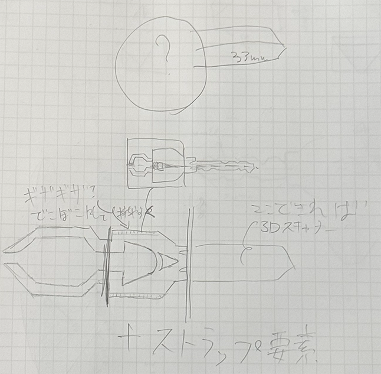
↑画像イメージ1
初期デザインのスケッチ。
鍵の部分は細かく複雑なため、できれば3Dスキャナーを使いたかったが
今回の課題はFusionでのモデリング練習も兼ねているため、先生から
許可が下りず定規でチマチマ測定することにしました。
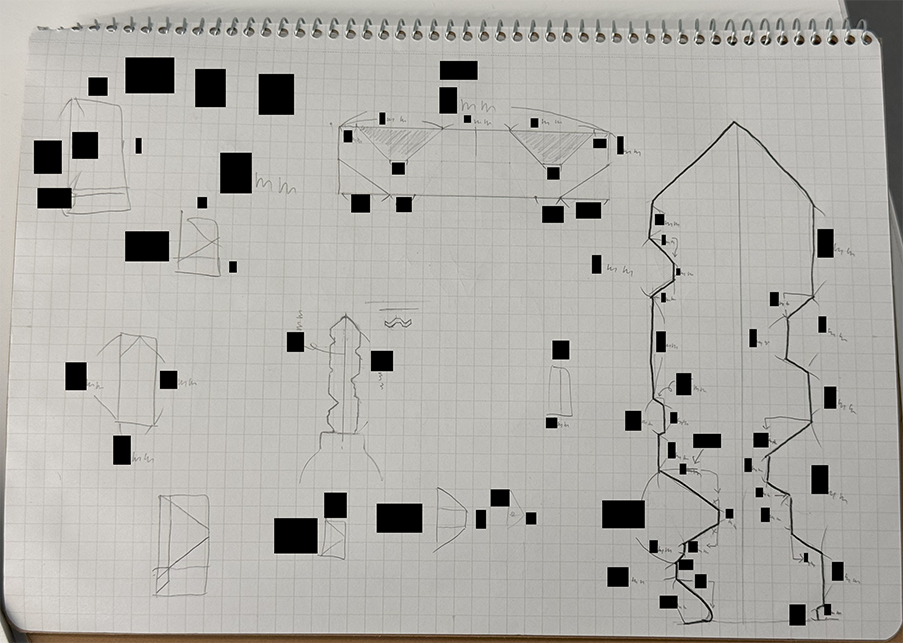
↑画像イメージ2
定規で自宅の鍵を測定したスケッチ。(修正済み)
プライバシーの関係上、サイズは黒塗り！！笑笑
角度を測るのは難しかったので、直線の部分と高さのみを測り、正確に
モデリングができるようにしました。
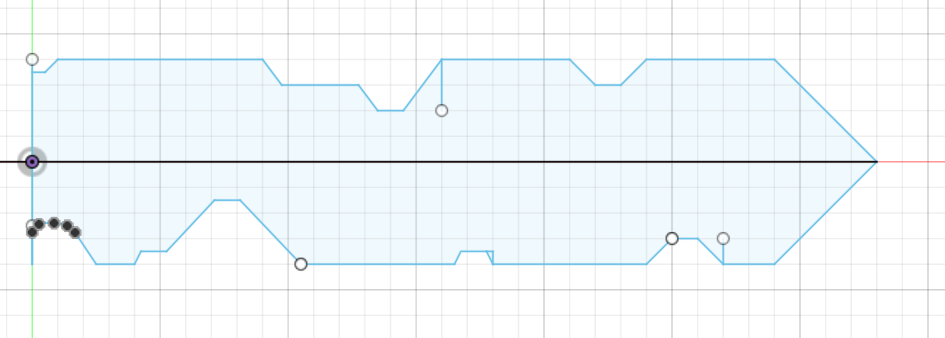
↑画像イメージ3
画像2を元にFusion内でスケッチ。
細かく測定したおかげで、思っていたよりもずっと簡単にスケッチが
できました！！ただ、この段階で”とある問題”が発生していたのです・・・
なんと！
課題の制限サイズをもう少しで超えてしまいそうだったのです！！
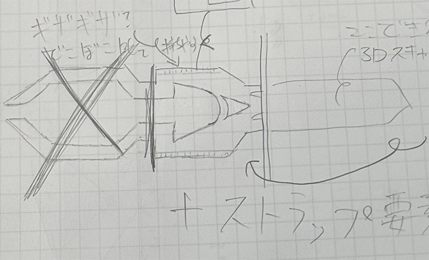
↑画像イメージ4
制限サイズの都合上、初期案のピンセットの部分のデザインは
実現が不可能に・・・
困った末に考えついたのがこれ。↓
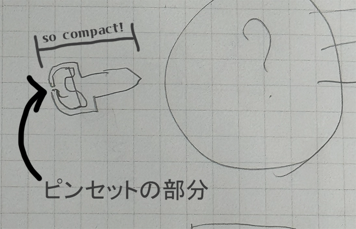
↑画像イメージ5
瓶の栓抜きみたいな形ですが、これならいけそう・・・！！
ということで最終的にはこうなりました。
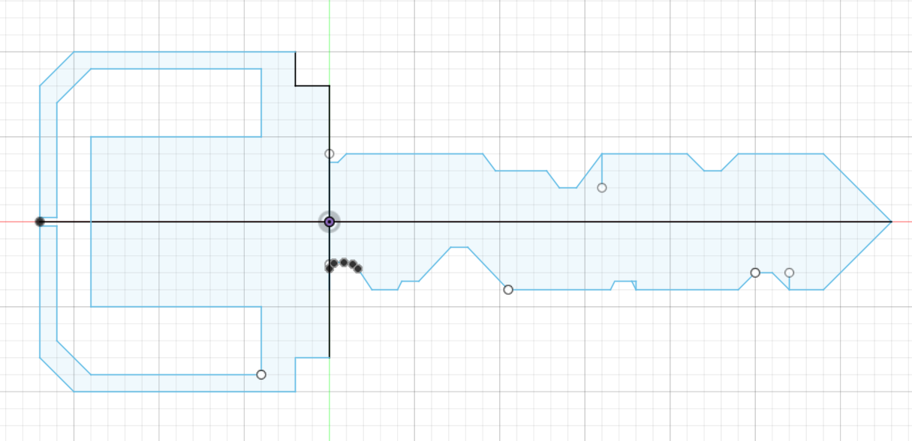
↑画像イメージ6
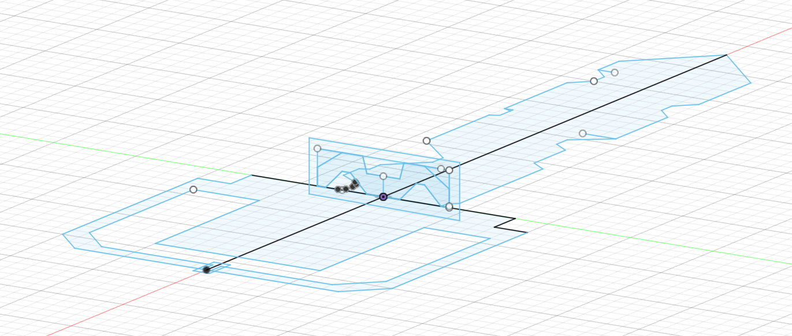
↑画像イメージ7
これでついにスケッチの作業は終了！！あとはプリントするだけです！！
【プリント】
スケッチが終わったらあとは簡単です。画像6、画像7の順に押し出したら
ALL OK！
これが・・・↓
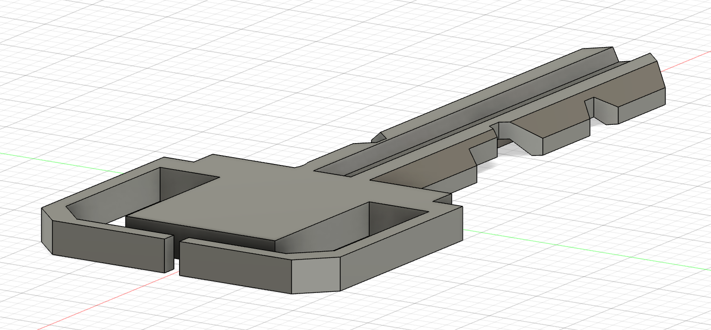
こう。 ↑画像イメージ8
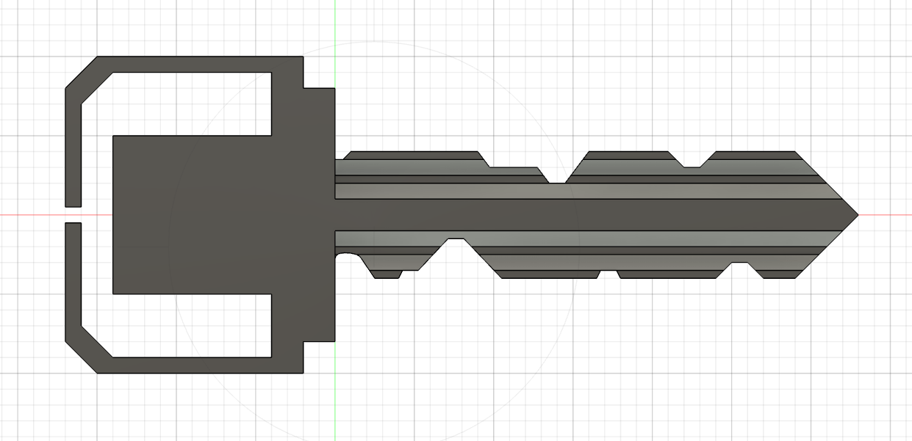
↑画像イメージ9
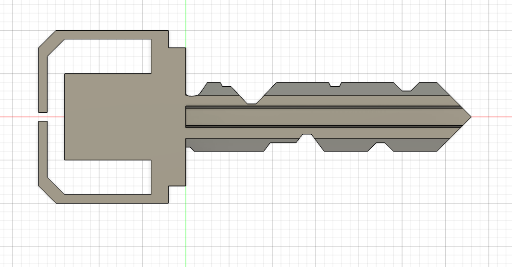
↑画像イメージ10
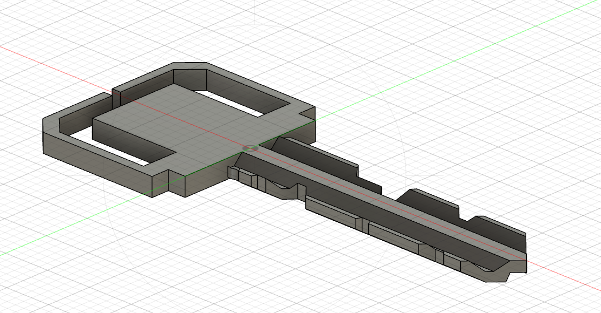
↑画像イメージ11
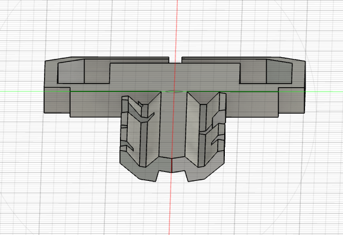
↑画像イメージ12
そして、実際に3Dプリントしたものがこちら。↓
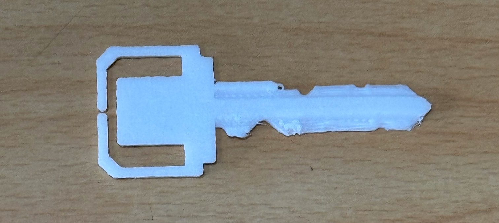
↑画像イメージ13
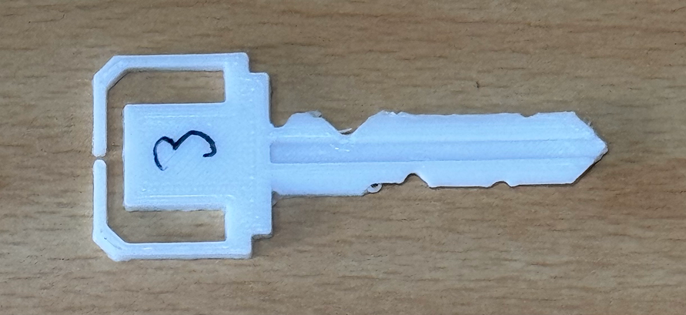
↑画像イメージ14
やはり、というか当然、というか、流石に正確に出力することは
できませんでした。ただ、思っていたよりもずっとそれっぽく
出力されていて、3Dプリンターの実力にとても驚きました！！
ちなみに、この段階では自宅の鍵穴には刺さりもしませんでした・・・
悔しい！！
写真の3という数字は、バージョンの数字です。いずれ鍵としての機能も
ちゃんと付け加えたいです！！
参考：
3Dプリントまでの手順
【設計ファイル】
my-key-pinset.stl